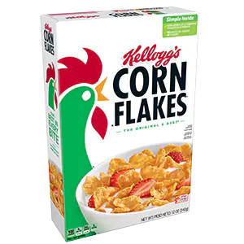
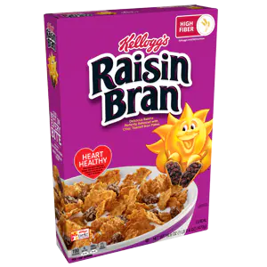

Flaked Cereal Examples.
The first example, Corn flakes are perhaps the most recognizable flaked cereal. Invented in 1894, Corn Flakes have been the classic symbol for a standard breakfast for a century.
The second cereal in question is Frosted Flakes, invented in 1952, this classic glazed flaked cereal has become a symbol of children's breakfast for decades.
The third cereal, Raisin Bran, was an 1926 addition to the standard Corn Flake cereal, heavily debated as a "healthy alternative", Raisin Bran adds a little extra to a standard bowl of Corn Flakes.

